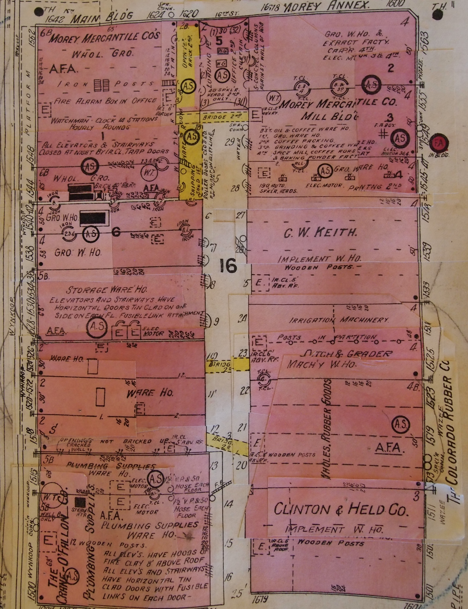

This project started in the spring of 2015 as an independent study in the geography program at the University of Colorado at Denver under supervision of Mike Hinke. The goal of this project was to explore how to combine different FOSS4G (Free and Open Source Software for Geospatial Applications) technologies into a single product that would allow users to explore a spatio-temporal dataset. The theme chosen for this project was the urban past of Denver.
The first step was to define the project's scale, we decided that Denver's Lower Downtown (LoDo) district could offer a clear presentation of the city's urban morphology change through the years. The Denver public library holds and amazing collection of Sanborn fire insurance map on its archives, on this project such maps were photographed and then digitized in QGIS. During the digitization process each building had its characteristics translated into attributes such as, number of floors, building material, building use, and so on. Denver Public Library only holds copies of 1925 and 1961 Sanborn maps, however, the University of Colorado at Boulder provides digital copies of the 1887 edition of these fire insurance maps. The addition of this earlier year allowed us to construct a more complete picture of Denver’s urban evolution from the late nineteenth century to mid twentieth century. To complement the project, we added a 2015 layer with data from Denver Data Catalog so users could compare each historical layer against the most current urban profile. This last layer does not comes if the same level of information as the historical datasets, therefore no extra data can be obtained from this 2015 dataset.
One of the many original maps used in this project.
The main libraries that power this map are:
The main driver of this map is leaflet, which does all the heavy lifting to generate the map itself. Once the base map is loaded we can use three different sets of functions to grab and display the historical layers. Everything starts when the user
clickx on one of the three buttons, which triggers a given function. The mechanisms that allow user interaction with the interface are powered by jQuery. Once the button is clicked a series of jQuery functions change the appearance of the button,
allow the user to use the opacity slider, display the measurement values, and make a request to load the specific historical layer. To load a historical layer the web-site needs first to grab the raw geoJson, this is made by using an AJAX call through
the
.getJSON function, which is a jQuery function. Once the data is gathered a leaflet function draws the layer on the map. After the layer is loaded the script continues to count how many structures are on this specific layer and outputs the
final number on the interface. The area is calculated on the fly by turf.js, a javascript library that allows for some spatial operations, and the area is then displayed. See below the function that makes the whole process possible.
//button is clicked to show layer
$("#layer1").click(function() {
if ($(this).children().hasClass('glyphicon glyphicon-ok')) {
map.removeLayer(geojson1);
slider1.setAttribute('disabled', true); //disable slider when layer is removed
$('#slider1').css('background-color', '#ccc'); //set slider color to gray
$('#layer1').css('background', '#26a69e'); //return button to original color
$('#area1').empty(); //remove area number
$('#count1').empty(); //remove count number
} else {
slider1.removeAttribute('disabled');
$('#slider1').css('background-color', '#5c97bf'); //set slider color to blue
$('#layer1').css('background', '#FF9900'); //set button color to match the layer's color
$.getJSON("data/1887.json", function(data) {
geojson1 = L.geoJson(data, {
style: style1,
onEachFeature: effects
});
map.addLayer(geojson1);
//using turf to calculate area
var data = geojson1.toGeoJSON(); //needs to translate the layer into geoJson
var area1 = turf.area(data); //turf function to calculate area
var area1 = area1.toFixed(2); //round to two decimals
$('#area1').html('1887: ' + area1 + ' square meters'); //shows the area
var count1 = data.features.length; //couts the number of objects in data
$('#count1').html('1887: ' + count1 + ' structures.'); //shows the count
});
}
});
Contact me: oliveira.ricardo@hotmail.com
See more maps at my GitHub
Ricardo Oliveira http://ricardooliveiragis.com/